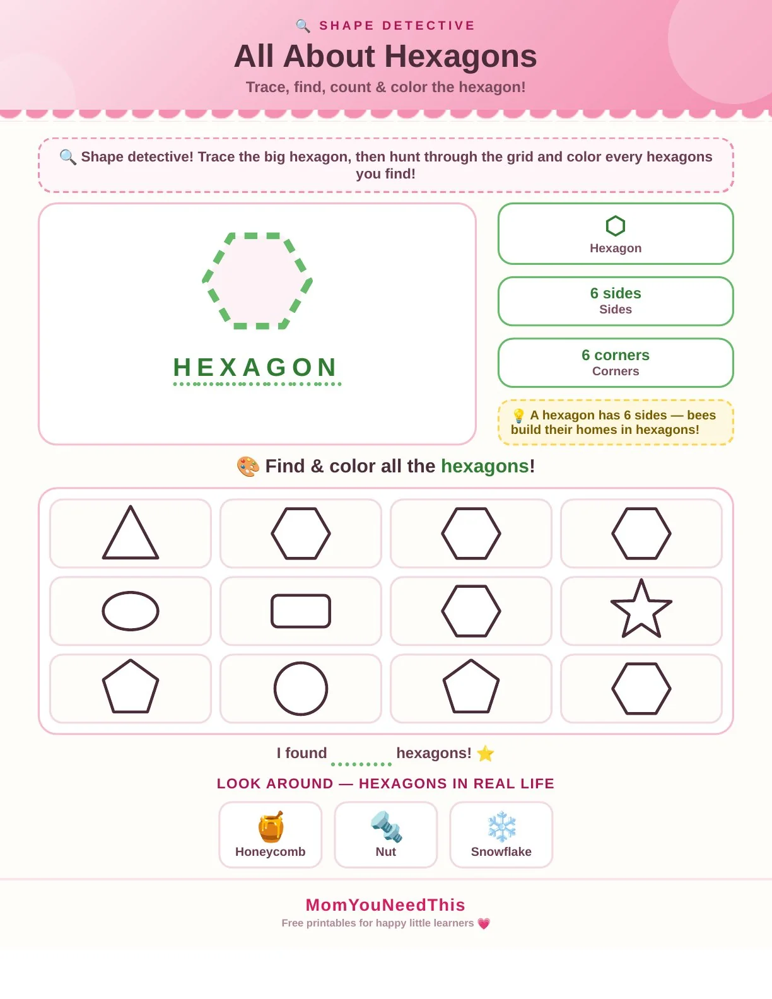

Hexagon Activities For Kids Trace, Color & Learn All About Hexagons
Help your child discover hexagons with printable activities that build shape recognition, counting 6 sides, and early geometry skills.
Quick Answer
This free printable hexagon activity is designed for toddlers and preschoolers ages 2–5. A hexagon has 6 sides and 6 corners, and it is nature's favorite shape: bees build with it, snowflakes grow with it, and turtle shells wear it. The worksheet includes hands-on tracing, coloring and identification exercises that build early learning skills through play. Download and print at home with no signup needed — no account required, just print and start learning, and discover why the hexagon is the hardest-working shape in nature.
At a Glance
- Ages: Toddlers and preschoolers (ages 2–5)
- Activity: Learning the hexagon — 6 sides, 6 corners
- Skills: Shape recognition: hexagon
- Format: Printable worksheet (PDF)
- Cost: Free, no signup
⬡ Learn About a Hexagon
Six sides is a lot to count, and that is the point of this page: the hexagon rewards the careful counter. Touch-and-count each side, touch-and-count each corner, and check that both reach 6. Children who rush will land on 5 or 7 — the worksheet's identification exercises are designed to catch exactly that, mixing hexagons with pentagons so the counting, not the look, has to decide.
The hexagon also carries the best story in the shape set. Bees build honeycomb from hexagons because hexagons fit together with no gaps and use the least wax for the most storage — nature solved an engineering problem with this shape. Snowflakes grow six branches, basalt columns cool into hexagonal pillars, and the nuts and bolts in a toolbox wear hexagonal heads so wrenches can grip them. Tracing first, then the hunt: this shape hides in the kitchen (honey jars love showing it off) as much as outdoors.

🖨️ Download Your Free Hexagon Printable
Trace the hexagon, color it in, and hunt for hexagons around your home. Print it out, grab the crayons, and you're ready — no signup needed.
⬇️ Download Free Printable 🖨️ Print(opens in new tab)🎁 Free printable for toddlers & preschoolers
🔍 Hexagon Hunt Around Your Home
Turn learning into a game! Hunt for hexagons where nature and tools keep them: honeycomb (a honey jar label or a bee book will do), snowflakes in winter pictures — count a snowflake's six branches — turtle shells, and the hexagonal heads of bolts and the nuts in a toolbox. Count the sides of each find out loud; a hexagon only counts when both counts reach six.
The kitchen offers the tastiest demonstration of why hexagons matter: hexagonal crackers and cereal pieces pack together edge to edge with no gaps, unlike circles, which always leave spaces. Line some up together and let your child test it — shapes that fit perfectly are called tiling, and the hexagon is the tiling champion of the beginner shapes.
💡 Why Learn About the Hexagon?
Hexagons teach thoroughness. At six sides, guessing stops working and method takes over — mark a starting side, count around, check the corners agree. That procedure is the same one a child will later use for counting anything large or confusing, from dots on a page to sides of shapes in a math book. The hexagon is where counting grows up.
It is also a child's first meeting with optimization — the idea that one arrangement can be better than another. Bees did not choose hexagons for looks; the shape stores the most honey for the least wax and tiles with zero waste. A preschooler cannot run the math, but “the bees picked the best shape” is a seed that grows. Add snowflakes' six-fold symmetry and the hexagon carries beauty along with the engineering.
📚 Keep Exploring Shapes
Discover more free 2D shape activities, printables, and learning ideas created for busy parents.
🎁 Back to 2D Shape Activities